1 Introduction to R and Data Visualization
1.1 Lecture Notes
Welcome to the reader for a course that will never be taught! I’ve got a very specific idea of how R should be taught, at least to those interested in using it for data science and other analytical applications. This reader represents that approach - we start off with data visualization, then exploration, and then touch on the basics of the language before getting into data analysis and transformation.
But all that comes later. First off, we have to answer one of the most basic questions surrounding this entire book: what even is R?
1.1.1 What is R?
R is a programming language used most commonly for data analysis and science. It’s completely free and is adaptable to almost any project - for instance, this book, my website, and plenty of statistical softwares are all written in R.
Once you know how to code in R, learning about and implementing those different adaptations is a piece of cake. The purpose of this class is to get you up to speed with the coding!
1.1.2 What is coding?
Coding is giving very specific instructions to a very stupid machine.
Or rather, a very literal machine - if you do things out of order, or misspell something, or capitalize things you shouldn’t, the computer won’t do it - instead, it’ll give you an error message. But if you get the syntax exactly right, the computer can do very complex tasks very quickly.
If that sounds frustrating, well… it sometimes is! But getting good at coding is mostly learning to be okay with being frustrated - and learning what to do when your code is being frustrated.
1.1.3 Conventions of the course (and this reader)
We’ll go over standard code styles a bit later in the course - there is a Right Waytm to code, but we won’t worry about that for a few more weeks. But so you can understand a few basics, here’s a few styles we’ll use in the text:
If text is preformatted, it means it’s something from R - a function, some data, or anything else that you’d use in your code. Blocks of code will be represented as follows:
print("Hello, World!")This format both makes it obvious that this is code - not text - and lets you copy and paste it into your R session to see the results for yourself. Code outputs, meanwhile, will mostly be shown like this:
## [1] "Hello, World!"Where text is commented out (that is, has a # in front, so R won’t parse it), so it won’t do anything if you put it in your session.
Generally speaking, you should try and type out each block of code in this reader into R. It’s critical that you start getting the muscle memory of typing in R down - that you understand what needs to be capitalized, what needs to be quoted, and what you’re most likely to typo. You can copy and paste straight from this book, but you’ll be setting your own learning back.
There are some exceptions to these general rules, but this is enough to get us started. With the introductions out of the way, we can start getting you set up to coding R.
1.1.4 Things You’ll Need
There are several pieces of software integral to this course reader, namely:
- R - download it here
- RStudio - download it here. Choose the free desktop version - you don’t need the server software, and you don’t need the commercial license.
- GitHub Desktop - download it here. You don’t need this until later in the course - and if you’re not actually enrolled in the course, you’ll technically never need it. You’ll be better off for knowing it, and it’ll make your life better - but you can get away without it.
We’ll be installing other pieces of software (in the form of R packages) throughout this reader, but each of those will be explicitly labeled when we use them.
1.1.5 Introduction to RStudio
You’ll almost never need to use R directly in this course - the form of R that you download from that first link is much harder to use than anything professionals interact with. Most practitioners use what’s known as an IDE - an Interactive Development Environment. There’s a lot of choices of IDEs for R, but RStudio is the best one.
Other textbooks would give you a more measured, even-handed approach to this issue. RStudio is the best one, though.
This course is assuming you’re using RStudio for all the examples, questions, and assignments. As such, we’re going to go over what you’ll see when you open RStudio for the first time.
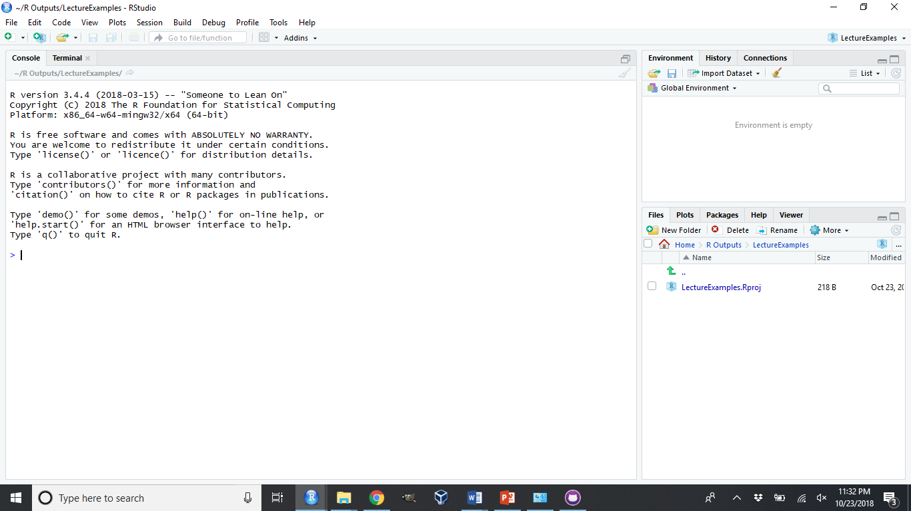
On the bottom right there you’ll see a list of all the files available in the folder that you’re working in. This window will also show you graphs when you make them, and help files when you look for them. Above it is a list of everything that’s available in the current “environment” - that is, all the datasets/functions/code that you’ve already programmed in the session, that can be used again moving forward.
On the left - taking up the full height of the pane - is something called the “Console”. This is the first place you can write R code, where you can give very specific commands to that very dumb machine. This is what we’ll be using for this entire unit - whenever you’re typing code from this reader into R, you should be typing it into the console.
Try it now - it’s time for us to start coding!
1.1.6 Your First Program
Two things to point out, before we get started - if you type either ( or " into RStudio, you’ll notice that the closing mark ) or " are automatically entered for you. If you type the closing mark, it won’t be entered - RStudio is smart enough to prevent you from duplicating this punctuation. However, your programs won’t work if you have any missing punctuation - if you’re getting weird error messages, make sure you have the proper quotes and parentheses!
Secondly, if you hit “enter” while working in the console, you’ll tell R to process your code and give you the output. If you want to type more than one line at a time, hold shift while pressing enter.
Okay, now let’s get going.
Type the following into the console - but be careful, everything R does is case-sensitive:
print("Hello, world!")What happened? If you did it right, you should have gotten the following:
## [1] "Hello, world!"It’s cool, right? Congratulations, you’re officially a programmer!
What we just did was use a function (print()), R commands that take inputs in the form of arguments (inside the parenthesis) and use them to return an output. We’ll get under the hood of functions in unit 5 - for now, we’re going to use the many functions other people have put together for us.
In addition to saying hi, you can use the R console to do math:
2 + 4 / 2## [1] 46^7## [1] 27993618%%7## [1] 4Note that R generally follows PEMDAS - we’ll go over that later.
Also, %% is an operator (in the same way that +, *, -, and / are all operators - mathematical symbols that represent a function) which returns the remainder - the integer (whole number) which remains after you’ve divided as much as you can. So while 7 fits into 18 twice (7*2 = 14), it leaves 4 “left over” afterwards.
R can also do a lot of more complicated things. By putting a list of values inside c(), you create what’s known as a vector - a list of objects that R can interact with.
c(1, 2, 3)## [1] 1 2 3c(18, "ESF", 98)## [1] "18" "ESF" "98"c("ESF", "Acorns", "Stumpies")## [1] "ESF" "Acorns" "Stumpies"(The “c” stands for combine, by the way.)
Look at the difference between that first and that second output - see how the numbers are in quotes the second time around? While R is capable of holding a lot of different types of data, a single vector isn’t. A vector has to either be a numeric or a character vector - it’s either numbers or symbols. This matters, because you can’t do math with symbols. For instance, if we try to divide the first vector by 3:
c(1, 2, 3) / 3## [1] 0.3333333 0.6666667 1.0000000It works just fine. Remember that dividing a vector by a scalar (a single number) divides every object in the vector by the scalar. For more information on matrix algebra, click here.
Meanwhile, if we tried to divide our second vector:
c(18, "ESF", 98) / 3# Error in c(18, "ESF", 98)/3 : non-numeric argument to binary operatorWe get our first error message of the course.
I should mention that I lied a little bit - vectors can also be a third type, logical. If a vector is made up of TRUE and FALSE elements - and no other elements - then the vector is considered logical.
Logical values are exactly what they sound like - they return TRUE if something is true, and FALSE if not. For instance:
6 > 4## [1] TRUE4 > 6## [1] FALSENow, the reason I only lied a little is that R understands logical values as binary values - TRUE is 1 and FALSE is 0. For instance:
TRUE == 1## [1] TRUEFALSE == 0## [1] TRUETRUE + 2 ## [1] 318^FALSE## [1] 1By the way, see how I used == to prove two things were equal? In R, = does something completely different than == - it assigns a value, which we’ll get into in unit 2. For now, just know that you should always use == to check if two values are equivalent.
Still, vectors can only hold one type of data - a vector with a value of TRUE and a value of ESF will become a character vector, while c(TRUE, 18, 2) is a numeric vector.
If you need to hold more than one type of data, you need a table - or, as they’re called in R, a dataframe. It is possible to make dataframes by hand in R - note, you can press SHIFT+Enter to start a new line:
data.frame(x = c(1, 2, 3),
y = c("a","b","c"),
z = c(TRUE, TRUE, FALSE))## x y z
## 1 1 a TRUE
## 2 2 b TRUE
## 3 3 c FALSEHowever, this is rare - most of the time, your data will be far too big to make inputting it in R make any sense. Instead, you’ll have to import it from a file elsewhere on your computer - but we’ll get to that later. You’ll see me building basic dataframes using this format throughout this book. I’ll often refer to these as df - the accepted shorthand for dataframe.
By the way, if you make a typo, you can press the UP arrow to load the last line of code you sent to R - don’t worry about retyping everything!
1.1.7 The iris Dataset
What’s very cool for our purposes is that R comes preloaded with a number of different datasets. Now, if you just type in the name of the dataset, you might overwhelm R for a moment - it will print out every single row of that dataset, no matter how long it is.
Luckily for us, the head() command lets us see just the first few rows of the data. If we use the dataset iris (included in base R), for instance, we’d get the following result:
head(iris)## Sepal.Length Sepal.Width Petal.Length Petal.Width Species
## 1 5.1 3.5 1.4 0.2 setosa
## 2 4.9 3.0 1.4 0.2 setosa
## 3 4.7 3.2 1.3 0.2 setosa
## 4 4.6 3.1 1.5 0.2 setosa
## 5 5.0 3.6 1.4 0.2 setosa
## 6 5.4 3.9 1.7 0.4 setosaNote that while the default is to print six rows, you can choose how many rows to print by specifying n = ## in the head() function. You can even call the last few rows of your dataset by using the similar function tail() - for instance:
tail(iris, n = 3)## Sepal.Length Sepal.Width Petal.Length Petal.Width Species
## 148 6.5 3.0 5.2 2.0 virginica
## 149 6.2 3.4 5.4 2.3 virginica
## 150 5.9 3.0 5.1 1.8 virginicaPretty neat!
1.1.8 Graphing with R
This dataset contains measurements on 150 different irises, and is the data that was used to develop the first ever linear regressions. Even if you aren’t a stats nerd, this dataset lets us do some cool things. For instance, we can see that there are columns containing information on sepal length and sepal width - I wonder if they might be correlated? What would happen if we asked R to plot() them for us? Here, we’re going to use the $ operator for the first time - we’ll go over what exactly it does in unit 2, but for now, just know it’s how we specify which columns we want the plot() function to use:
plot(iris$Sepal.Length, iris$Sepal.Width)
Luckily, as you can see, R has some basic plotting functions built right in. However, these plots are hard to use - and to understand. It seems like sepal length and width are completely unrelated!
1.1.9 The Tidyverse Package
Thankfully enough, R has a ton of add-on softwares - called packages - which dramatically expand R’s usefulness. Let’s install some of the most common ones now:
install.packages("tidyverse")library(tidyverse)## -- Attaching packages --------------------------------------- tidyverse 1.2.1 --## v ggplot2 3.0.0 v purrr 0.2.4
## v tibble 1.4.2 v dplyr 0.7.4
## v tidyr 0.8.0 v stringr 1.3.0
## v readr 1.1.1 v forcats 0.3.0## -- Conflicts ------------------------------------------ tidyverse_conflicts() --
## x dplyr::filter() masks stats::filter()
## x dplyr::lag() masks stats::lag()Note the quotes around “tidyverse” when you go to install it, but not when it’s inside of library(). The reason for this is a little complicated - basically, you don’t use quotes for things that are inside of R’s memory, like data, functions, and packages. You use quotes for everything else.
If you get an error saying “no package named tidyverse”, try reinstalling the package. It might take a few minutes to load.
What we just did was install a package called the tidyverse (with install.packages), and load it using library. Most common problems in R have already been solved by someone else, and most of those people have made their work publicly available for others to use in the form of a package. Packages only have to be installed once to be used - but you’ll have to call them using library() each time you restart R.
The tidyverse is a pretty unique example of a package - it actually contains six packages, most of which are essential to using R like a professional. The most important one for us right now is called ggplot2. Don’t worry about having to load it - library(tidyverse) automatically loads this package for you.
1.1.10 ggplot2
ggplot is an attempt to extend R’s basic graphics abilities to make publication-quality graphics faster and easier than ever before. In fact, we can make a version of our scatterplot above, just by typing:
ggplot(data = iris, aes(x = Sepal.Length, y = Sepal.Width)) +
geom_point()
Remember, R is case sensitive!
There are five important steps that went into making that graph:
- First, the
ggplot()call tells R that we want to create a ggplot object - Second, the
data = iristells ggplot that everything we do should use the iris dataset - Third, the
aes()specifies the aesthetics of the graph - what goes on the X and Y axes, but also any other data we want represented in our plot - Fourth, the
+lets us add additional steps to our plot. Note that the+must always be at the end of a line - putting it at the start of a line will mess up your session! If you see a+in the console instead of a>after trying to plot something, this is most likely what happened - press your escape key to exit the command. - Finally, the
geomtells ggplot what sort of graph we want. A geom is just the type of plot (or, well, the geometric object which represents data) - sogeom_boxplot()generates a boxplot, whilegeom_col()makes a column chart.geom_pointgenerates a scatterplot, but there are plenty of other options to choose from!x
The ggplot() and geom_point calls are known as functions - a type of R object that, when given certain parameters, gives a certain output. Those parameters - in this plot, our data =, x =, and y = calls - are known as arguments.
Each of these steps can have different values, if we want to change our graph. For instance, if we wanted to color and add a trendline for each species of iris, we could do the following:
ggplot(data = iris, aes(x = Sepal.Length, y = Sepal.Width, color = Species)) +
geom_point() +
geom_smooth()## `geom_smooth()` using method = 'loess' and formula 'y ~ x'
geom_smooth() adds a trendline to your graphs, with a shadow representing the 95% confidence interval around it. While some people refer to this as a line graph, it’s a separate thing entirely - a line graph connects the points, like this:
ggplot(data = iris, aes(x = Sepal.Length, y = Sepal.Width, color = Species)) +
geom_point() +
geom_line()
For now, we’re going to stick with our pretty smoothed trendline.

Our graph makes a lot more sense now - sepal length and width seem to be correlated, but each species is different.
If we really wanted to, we could make other aesthetics also change with Species:
ggplot(data = iris, aes(x = Sepal.Length, y = Sepal.Width, color = Species)) +
geom_point(aes(size = Species, shape = Species)) +
geom_smooth(aes(linetype = Species))## Warning: Using size for a discrete variable is not advised.## `geom_smooth()` using method = 'loess' and formula 'y ~ x'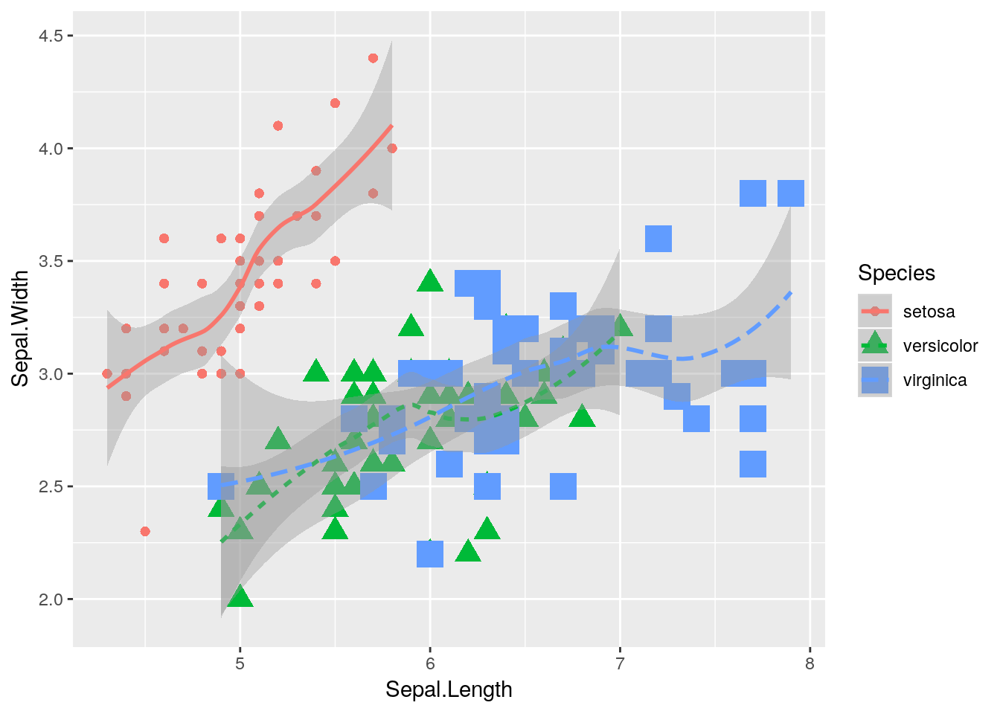
But that’s pretty ugly. We’ll get into graph best practices a little bit further into the unit - but generally speaking, a graph should contain exactly as much as it takes to get your point across, and no more. One aesthetic per variable is usually enough.
In an important exception to that rule, it’s generally well advised to use different shapes and colors at the same time. Colorblind viewers may not be able to discern the different colors you’re using - so varying the shape of your points or type of your lines helps make your graphics more accessible to the reader.
If you want, you can specify shapes using scale_shape functions, such as scale_shape_manual(). There are 25 shapes available for use in ggplot, each of which is named after a number - the number to the left of the shape in the figure below:

So if we wanted, we could specify shapes for each species in our dataset pretty easily! I’ve done so below. I’m also going to control the colors by hand - R has a ton of colors available, and you can go crazy picking the best colors for a graph. You can also specify colors by using hex codes (e.g., "#FFFFFF"), but be warned that you might not get an exact match of what you were looking for - R will match as closely as it can from the colors it has available.
ggplot(data = iris, aes(x = Sepal.Length, y = Sepal.Width, color = Species)) +
geom_point(aes(shape = Species), size = 3) +
scale_shape_manual(values = c(16, 17, 18)) +
scale_color_manual(values = c("purple",
"black",
"orange")) 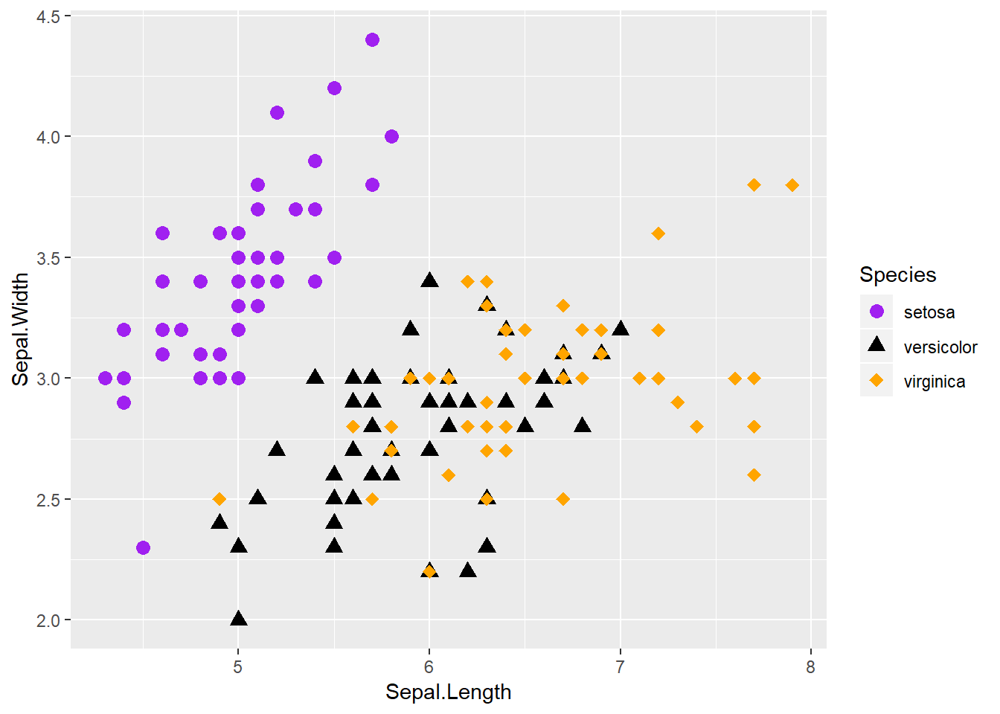
I also made the points a little bigger by specifying size = 3 - note that it isn’t in the aesthetics function, because it doesn’t care about any of the data.
We can also vary the type of line that gets drawn when we use geom_smooth. This one only has six options, each of which has both a number and a name:

You can manually specify linetypes with scale_linetype functions, similar to what we did with shapes. You can use either the names or the numbers - just make sure that the names go inside of quotes, while the numbers don’t!
I’m going to make our same graph again, manually controlling the linetypes. I’m also going to get rid of that shadow - it represents the 95% confidence interval around the line (which we’ll discuss more in our statistics section), as identified via standard error. We can turn it off by setting se = FALSE in the geom_smooth() function call.
ggplot(data = iris, aes(x = Sepal.Length, y = Sepal.Width, color = Species)) +
geom_smooth(aes(linetype = Species), size = 1, se = FALSE) +
scale_color_manual(values = c("purple",
"black",
"orange")) +
scale_linetype_manual(values = c("solid",
"dashed",
"twodash"))## `geom_smooth()` using method = 'loess' and formula 'y ~ x'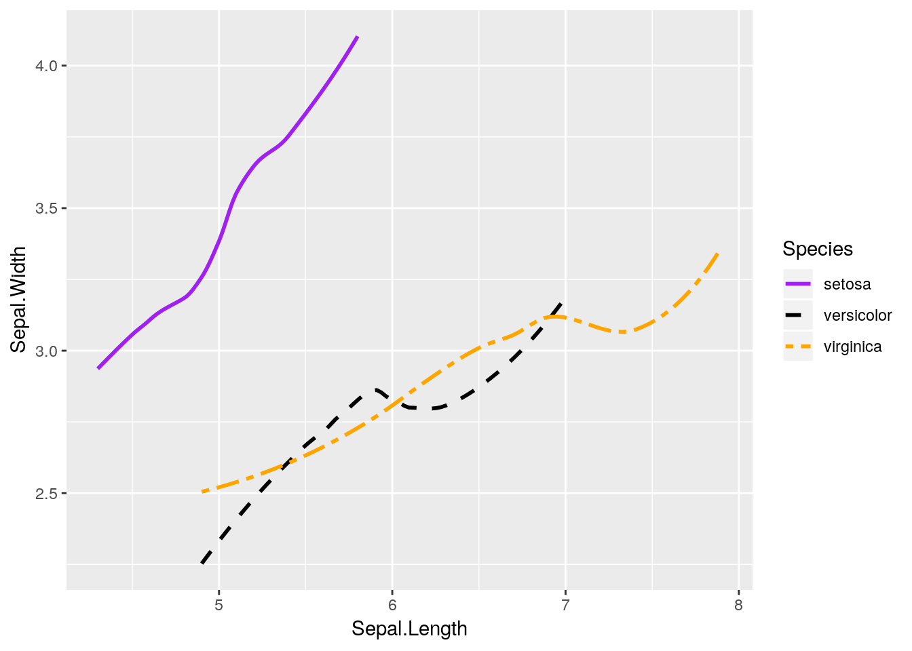
We can also combine both graphs into one, more useful graphic:
ggplot(data = iris, aes(x = Sepal.Length, y = Sepal.Width, color = Species)) +
geom_point(aes(shape = Species), size = 3) +
geom_smooth(aes(linetype = Species), size = 1, se = FALSE) +
scale_shape_manual(values = c(16, 17, 18)) +
scale_color_manual(values = c("purple",
"black",
"orange")) +
scale_linetype_manual(values = c("solid",
"dashed",
"twodash"))## `geom_smooth()` using method = 'loess' and formula 'y ~ x' Nifty!
Nifty!
Note, by the way, that I’ve put aes() calls in both the ggplot() and geom functions. Geoms inherit from the ggplot() call - they’ll use whatever data and aesthetics are specified inside the parenthesis. However, if you want an aesthetic to only apply to one geom, you can put it inside that geom() call. This is pretty commonly used when an aesthetic only applies to one geom - for instance, our geom_smooth() can’t take a shape =.
You have to be careful with this power, though! Sometimes, defining geom-specific aesthetics will give you misleading or simply wrong visualizations. For instance, what would happen if we draw our lines based on the petal length of each species, rather than the sepal width?
ggplot(iris, aes(x = Sepal.Length, y = Sepal.Width, color = Species)) +
geom_point(aes(shape = Species), size = 3) +
geom_smooth(aes(y = Petal.Length, linetype = Species), size = 1, se = FALSE) +
scale_shape_manual(values = c(16, 17, 18)) +
scale_color_manual(values = c("purple",
"black",
"orange")) +
scale_linetype_manual(values = c("solid",
"dashed",
"twodash"))## `geom_smooth()` using method = 'loess' and formula 'y ~ x'
Our plot makes no sense!
Lots of beginners are tripped up by this when they’re starting - a common assumption is that ggplot will add a second y-axis to the right hand of the plot. In reality, there is no way to graph two y-axes on the same ggplot graph - and that’s on purpose. It’s almost always better to just have two graphs next to each other, if you need to compare the data - though the linked article contains some other interesting suggestions.
Anyway, thinking back to our other graphic:

This graph is nice, but I think it could be even nicer. Specifically, there’s a lot of overlap between the versicolor and virginica species - it would be nice to see them side by side, rather than on the same plot.
1.1.11 Facetting
Luckily, ggplot makes this easy for us via what’s known as facets. By adding facet_wrap() to our plot, we’re able to split the three species onto their own graphs, while keeping the axes standardized.
ggplot(data = iris, aes(x = Sepal.Length, y = Sepal.Width)) +
geom_point(size = 3) +
geom_smooth(size = 1, se = FALSE) +
facet_wrap(~ Species)## `geom_smooth()` using method = 'loess' and formula 'y ~ x'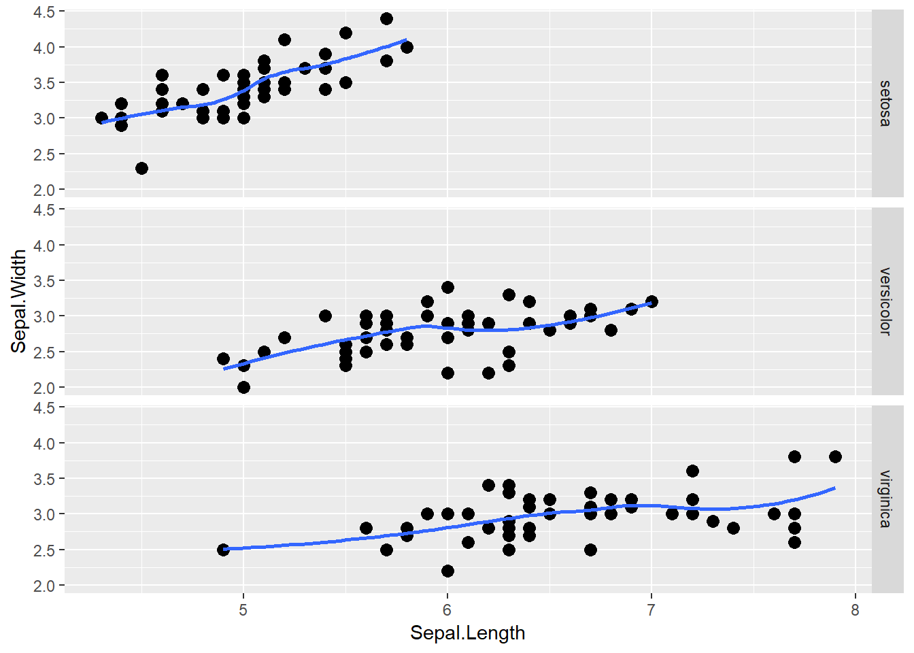
That makes seeing the differences much easier! Note that I got rid of the different species aesthetics - now that the species are each on their own plot, each species having a different color and shape doesn’t add any information to the visualization.
facet_wrap() is very useful, in that it will automatically wrap our plots into however many rows and columns are required. If we want to be a little more specific in how our data is arranged, however, we can use facet_grid(). By specifying either rows = or cols =, we can finely control how our data is split:
ggplot(data = iris, aes(x = Sepal.Length, y = Sepal.Width)) +
geom_point(size = 3) +
geom_smooth(size = 1, se = FALSE) +
facet_grid(rows = vars(Species))## `geom_smooth()` using method = 'loess' and formula 'y ~ x'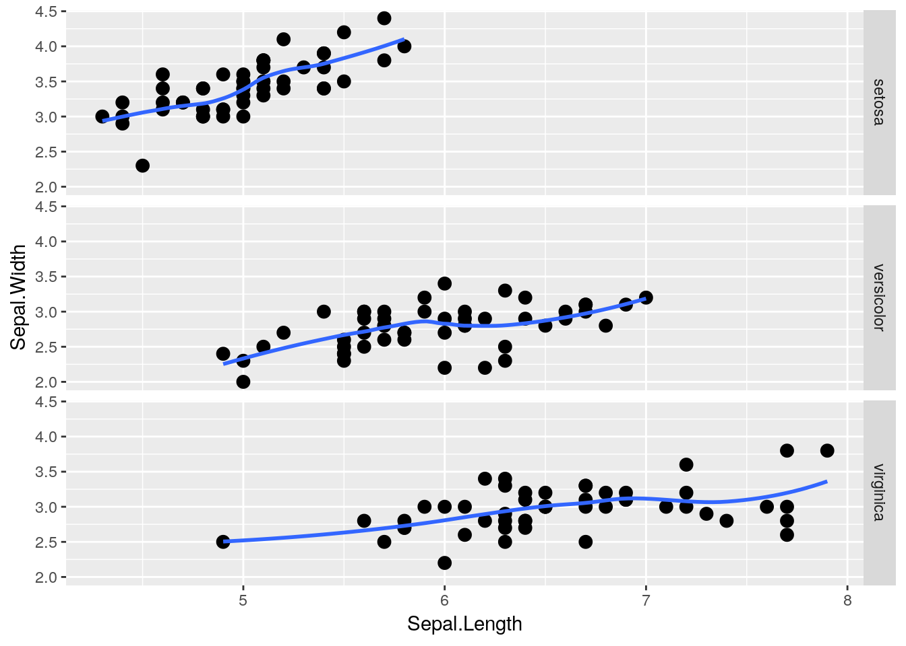
Heck, if we have two groups we want to compare, we can use both rows = and cols = at the same time! Unfortunately, iris doesn’t have two grouping variables in it - so I’m going to make another one (color):
iris2 <- iris
iris2$color <- rep(c("purple","red","black"), 50)
head(iris2)## Sepal.Length Sepal.Width Petal.Length Petal.Width Species color
## 1 5.1 3.5 1.4 0.2 setosa purple
## 2 4.9 3.0 1.4 0.2 setosa red
## 3 4.7 3.2 1.3 0.2 setosa black
## 4 4.6 3.1 1.5 0.2 setosa purple
## 5 5.0 3.6 1.4 0.2 setosa red
## 6 5.4 3.9 1.7 0.4 setosa blackAs you can see, I’ve told R to replicate the vector of purple, red, black 50 times - so about a third of each species will be in each color. Using that as our column grouping gives us:
ggplot(data = iris2, aes(x = Sepal.Length, y = Sepal.Width)) +
geom_point(size = 3) +
geom_smooth(size = 1, se = FALSE) +
facet_grid(rows = vars(Species), cols = vars(color))## `geom_smooth()` using method = 'loess' and formula 'y ~ x'## Warning in simpleLoess(y, x, w, span, degree = degree, parametric =
## parametric, : pseudoinverse used at 5.2## Warning in simpleLoess(y, x, w, span, degree = degree, parametric =
## parametric, : neighborhood radius 0.2## Warning in simpleLoess(y, x, w, span, degree = degree, parametric =
## parametric, : reciprocal condition number 0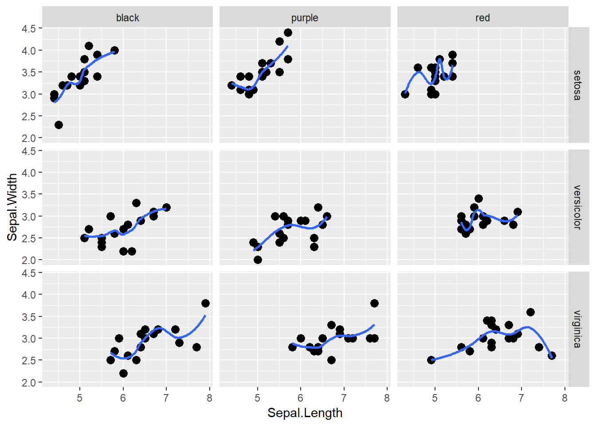
1.1.12 diamonds
For this next exercise, we’re going to be using the diamonds dataset, which contains data about 54,000 different diamond sales. It looks like this:
head(diamonds)## # A tibble: 6 x 10
## carat cut color clarity depth table price x y z
## <dbl> <ord> <ord> <ord> <dbl> <dbl> <int> <dbl> <dbl> <dbl>
## 1 0.230 Ideal E SI2 61.5 55. 326 3.95 3.98 2.43
## 2 0.210 Premium E SI1 59.8 61. 326 3.89 3.84 2.31
## 3 0.230 Good E VS1 56.9 65. 327 4.05 4.07 2.31
## 4 0.290 Premium I VS2 62.4 58. 334 4.20 4.23 2.63
## 5 0.310 Good J SI2 63.3 58. 335 4.34 4.35 2.75
## 6 0.240 Very Good J VVS2 62.8 57. 336 3.94 3.96 2.48We can plot the price of each diamond against its weight (or carat) pretty easily, using geom_point() like before:
ggplot(diamonds, aes(carat, price)) +
geom_point()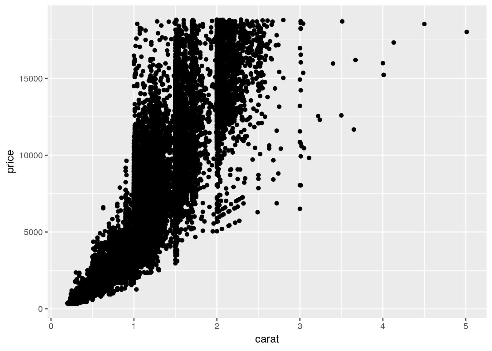
Note that I’ve stopped explicitly writing data =, x =, and y =. Without that specification, R assumes that you’re providing arguments to the function in the order the function normally expects them - which, for ggplot(), is in the form ggplot(data, aes(x, y)). Most code you’ll find in the wild is written in this more compact format.
Anyway, back to the graph. It’s a bit of a mess! It’s hard to discern a pattern when all 54,000 points are plotted in the same area. We can make things a bit better by making the points transparent, by giving them a low alpha = value:
ggplot(diamonds, aes(carat, price)) +
geom_point(alpha = 0.05)
This is somewhat better! We can see that there’s a correlation between price and carat - but it’s hard to tell exactly what the trend looks like. Plus, there’s a good amount of empty space on the graph, which we could probably make better use of.
We can consider transforming our axes to solve all these problems. For instance, if we plotted both our axes on log10 scales, we’d get the following graph:
ggplot(diamonds, aes(carat, price)) +
geom_point(alpha = 0.05) +
scale_x_log10() +
scale_y_log10()
So we can see that, by log-transforming our variables, we get a linear-looking relationship in our data.
Now, I’m personally not a fan of log graphs - and you shouldn’t be, either. But you’ll sometimes have data that can’t be properly explained without logarithims - or advisors who won’t listen to reason. As such, it’s worth knowing how to make R plot things exactly as you want it to.
You can perform plenty of other axes transformations by specifying the trans argument inside of your scale function. For instance, if we wanted to use a natural log instead, we could type:
ggplot(diamonds, aes(carat, price)) +
geom_point(alpha = 0.05) +
scale_y_continuous(trans = "log") +
scale_x_continuous(trans = "log")
To learn more about transformations, you can read the documentation by typing ?scale_x_continuous() into the console.
1.1.13 Other Popular Geoms
One of the most popular chart types is the simple bar chart. It’s easy enough to make this in ggplot, using geom_bar():
ggplot(diamonds, aes(x = cut)) +
geom_bar()
Where did count come from? We only specified an x variable!
The short answer is that ggplot calculated it by itself! To data scientists, a bar chart is exactly what’s shown here - a graph showing the frequency of each level of a single categorical variable. As such, ggplot only needs an x aesthetic to make a bar plot - it will calculate the count of each level of the variable and use that as its y.
If we wanted to communicate more information with this chart, we could think about what number of each cut type is made up of each clarity level. One way to do that is to map the fill of the barplot to the clarity variable:
ggplot(diamonds, aes(cut, fill = clarity)) +
geom_bar()
Note that we use fill in this case, as we’re defining the color for the inside of the polygon, not the lines themselves. If we used color instead, we’d get something like this:
ggplot(diamonds, aes(cut, color = clarity)) +
geom_bar()
Where only the borders of each polygon are colored.
Now, ggplot’s default behavior when given a color or fill aesthetic is to make a stacked bar chart, as shown above. Stacked bar charts are awful. It’s really hard to compare values between bars, because the lower limits aren’t standardized. The one exception is if you’re only comparing two values and all bars sum to the same amount, like so:
## Make a table of x and y values, which are split into two groups by z.
## Each x has a y value for each level of z.
df <- data.frame(x = c(1, 1, 2, 2, 3, 3),
y = c(40, 60, 30, 70, 20, 80),
z = c("A","B","A","B", "A", "B"))
df## x y z
## 1 1 40 A
## 2 1 60 B
## 3 2 30 A
## 4 2 70 B
## 5 3 20 A
## 6 3 80 Bggplot(df, aes(x, y, fill = z)) +
geom_col()
Note that I’m using geom_col(), which makes column charts. This lets us define y as values other than the simple count - useful if we’re trying to graph the average value for each group, for instance.
This simple stacked bar chart works well enough - it lets you compare the values of both A and B, since the groups share a border at either the top or bottom edge of the plot. For most purposes, though, a somewhat better option is the dodged bar chart:
ggplot(diamonds, aes(cut, fill = clarity)) +
geom_bar(position = "dodge")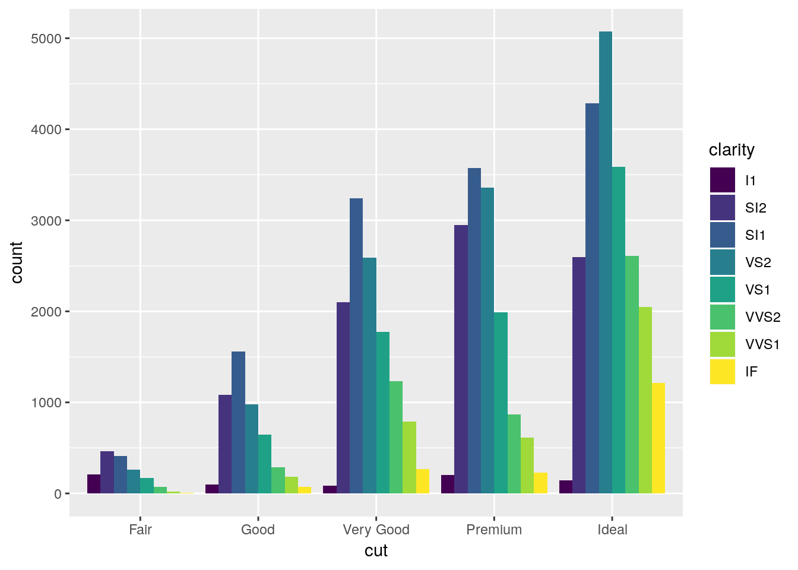
Dodged bar plots are better than stacked bars when comparing more than one value for each item on the x axis of a chart. However, with enough series, dodged bar charts can also be decently confusing - try comparing the I1 values between Premium and Fair on this chart, for instance.
If you have to have this much information in a single graphic, geom_jitter can help. It generates a scatterplot, much like geom_point(), but “jitters” the points by adding statistical noise - making it easy to compare counts between all combinations of the two variables.
ggplot(diamonds, aes(cut, clarity)) +
geom_jitter(alpha = 0.05)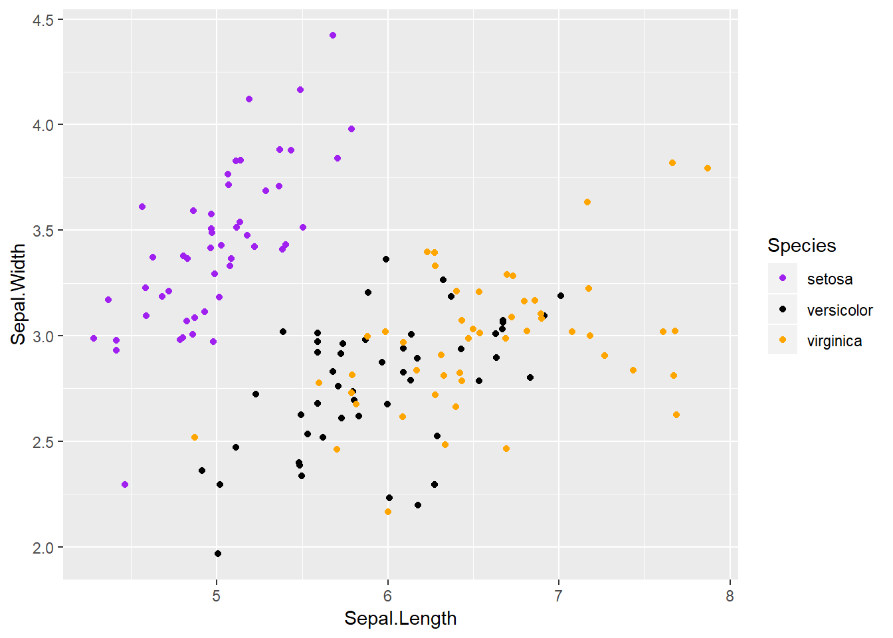
You can use geom_jitter to make regular scatterplots, as well - for instance, we can see more of the points in our original iris scatterplot by adding a little bit of noise to the plot:
ggplot(iris, aes(Sepal.Length, Sepal.Width, color = Species)) +
geom_jitter() +
scale_color_manual(values = c("purple",
"black",
"orange"))
The last main plot type we’ll go over is the boxplot. This is mostly used to show the distribution of data - it draws a plot with a line at the data’s median, box borders at the 25% and 75% values, and lines reaching to the 5% and 95% values.
ggplot(diamonds, aes(cut, price)) +
geom_boxplot()
There are a lot of other things you can do with ggplot that we won’t go over here - you can find cheatsheets on the package here, and read more documentation here.
Note that you can’t make pie charts with ggplot. You usually shouldn’t be using a pie chart anyway, but we’ll go over this in unit 7.
1.1.14 Designing Good Graphics
Graphics, at their essence, exist to communicate data and make arguments. In order to do that, a graphic has to be both visually clean and easily understood, while at the same time containing exactly enough information to get a point across - and nothing more. Learning how to make graphics like this is a skill unto itself, and one of the primary focuses of this course. After all, it doesn’t matter how smart you are and how perfect your analysis is if you aren’t able to tell anyone about it afterwards!
The hard part about teaching graphic design is that it’s as much an art as a science - there is no one right way to make compelling graphics. What I’m going to teach in this section is as much my opinion as it is the correct way to do things - other textbooks and other people have their own preferred methods, none of which are inherently better or worse.
For instance, ggplot comes with a number of preinstalled themes which you can add to any given plot. For a complete list, click here. We’ll just demo a few of the most common ones, using our old iris scatterplot:
ggplot(iris, aes(Sepal.Length, Sepal.Width, color = Species)) +
geom_point() +
scale_color_manual(values = c("purple",
"black",
"orange")) +
theme_bw()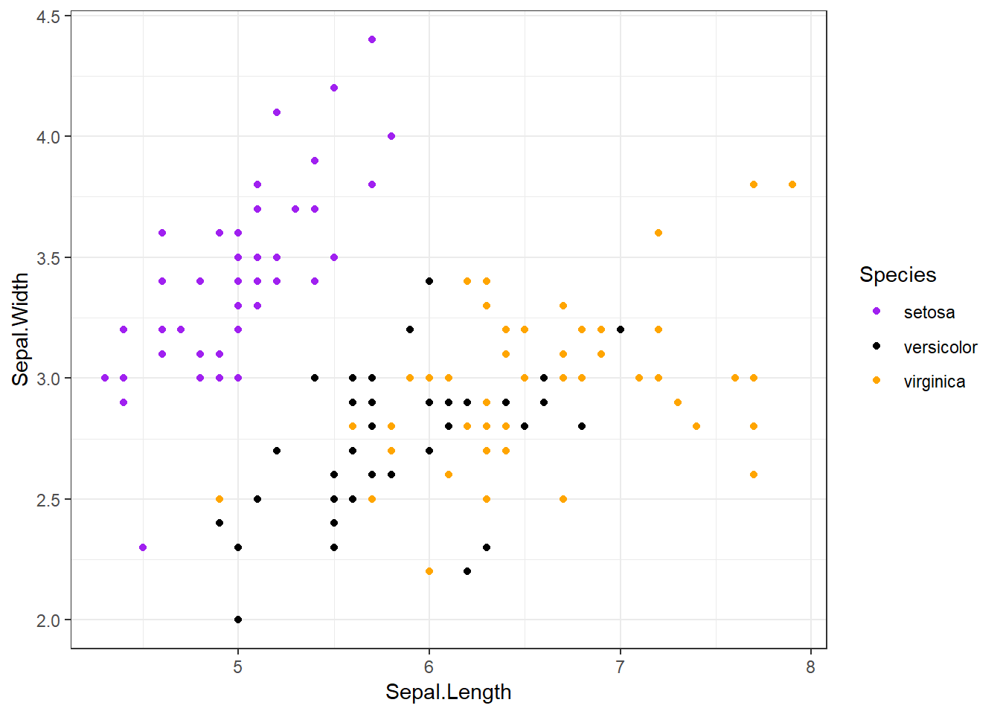
ggplot(iris, aes(Sepal.Length, Sepal.Width, color = Species)) +
geom_point() +
scale_color_manual(values = c("purple",
"black",
"orange")) +
theme_minimal()
ggplot(iris, aes(Sepal.Length, Sepal.Width, color = Species)) +
geom_point() +
scale_color_manual(values = c("purple",
"black",
"orange")) +
theme_classic()
Plenty of other packages introduce other ggplots for you to use. My personal favorite is cowplot. Written by Claus O. Wilke, it provides some really interesting new extensions to ggplot, and sets the default theme to something that generally looks better than ggplot’s defaults. If we install it now:
install.packages("cowplot")And then load it:
library(cowplot)##
## Attaching package: 'cowplot'## The following object is masked from 'package:ggplot2':
##
## ggsaveggplot(iris, aes(Sepal.Length, Sepal.Width, color = Species)) +
geom_point() +
scale_color_manual(values = c("purple",
"black",
"orange"))
This default is pretty similar to theme_classic(), except with different font sizes. However, if we add background_grid() to our plot:
ggplot(iris, aes(Sepal.Length, Sepal.Width, color = Species)) +
geom_point() +
scale_color_manual(values = c("purple",
"black",
"orange")) +
background_grid()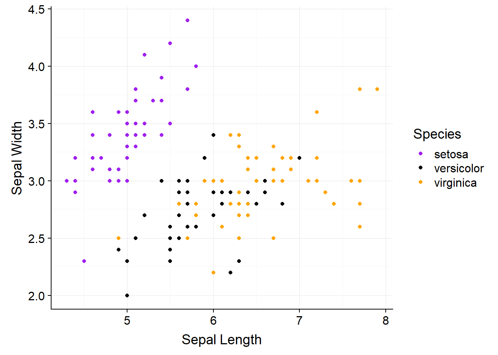
We get what I consider to be the nicest looking default option R will give you.
If we want to override the default axis names, we can control that with labs():
ggplot(iris, aes(Sepal.Length, Sepal.Width, color = Species)) +
geom_point() +
scale_color_manual(values = c("purple",
"black",
"orange")) +
background_grid() +
labs(x = "Sepal Length", y = "Sepal Width")
With labs, we can also give our graphs a title and caption. This is generally a bad idea - if you’re going to include a graph in a publication, you’ll want to typeset these outside of the image file - but it makes understanding these graphs a little easier.
ggplot(iris, aes(Sepal.Length, Sepal.Width, color = Species)) +
geom_point() +
scale_color_manual(values = c("purple",
"black",
"orange")) +
background_grid() +
labs(x = "Sepal Length",
y = "Sepal Width",
title = "Sepal Width as a Function of Sepal Length",
subtitle = "Data from R. A. Fischer's iris dataset, 1936",
caption = "Made in R with ggplot2")
If we want to change anything about the theme (for instance, the text size or legend position), we can specify that in theme():
ggplot(iris, aes(Sepal.Length, Sepal.Width, color = Species)) +
geom_point() +
scale_color_manual(values = c("purple",
"black",
"orange")) +
background_grid() +
labs(x = "Sepal Length", y = "Sepal Width") +
theme(text = element_text(size = 12),
axis.text = element_text(size = 10),
legend.position = "top")
And we can keep specifying what we want until we’re satisfied with our graph.
ggplot will also let us focus on specific parts of the data:
ggplot(iris, aes(Sepal.Length, Sepal.Width, color = Species)) +
geom_point() +
scale_color_manual(values = c("purple",
"black",
"orange")) +
background_grid() +
labs(x = "Sepal Length", y = "Sepal Width") +
scale_x_continuous(limits = c(5, 7)) +
scale_y_continuous(limits = c(2.5, 3.0))## Warning: Removed 93 rows containing missing values (geom_point).
Of course, if you’re graphing things such as percentages, you should be careful about where you set your axes. Say we had a dataset where every 1 increase in some variable x saw a 1% increase in y, so that y increased almost 10% over the course of all x values. If you let ggplot set your axis defaults, you’d wind up with a perfect correlation:
df <- data.frame(x = 1:10,
y = 61:70)
ggplot(df, aes(x, y)) +
geom_line() +
background_grid()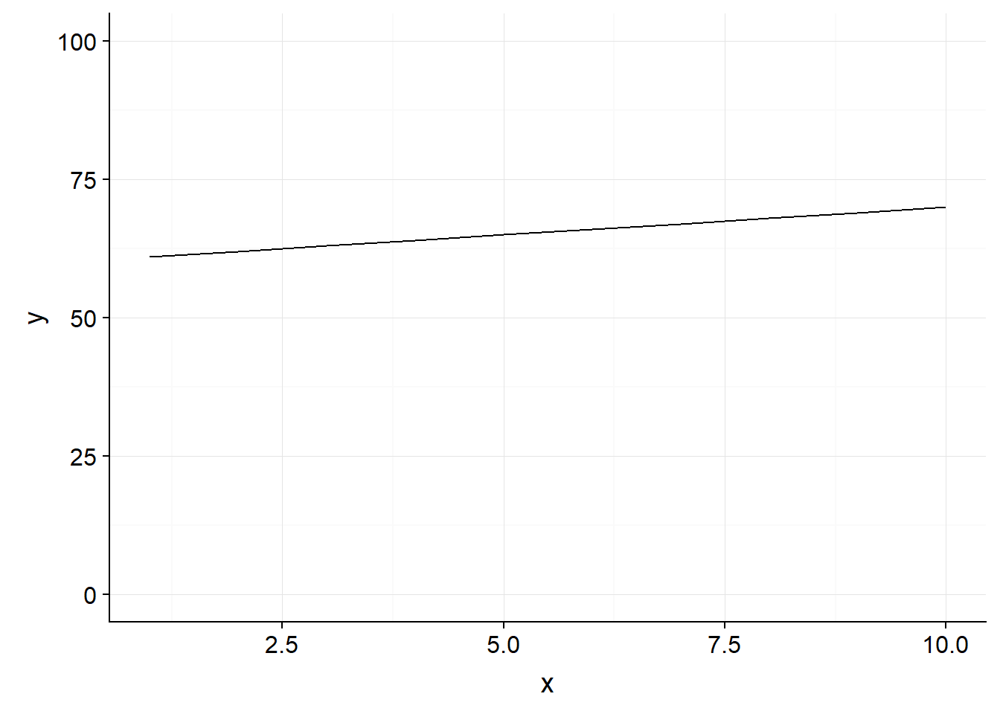
However, it’s probably more truthful to graph percentages on a 0-100 scale - doing so shows us that x has a weaker impact on y than the default would have us believe:
ggplot(df, aes(x, y)) +
geom_line() +
background_grid() +
scale_y_continuous(limits = c(0,100))
1.1.15 Saving Your Graphics
When you’re satisfied with your graph, simply call the ggsave() function to save it to whatever file you’re working in. The first argument to this function should be your graph’s desired file name, with the extension - ggplot can save graphs as pngs, jpegs, pdfs, and several other formats.
You can either add it to your workflow with +, or call it after you’ve plotted your graph - ggsave() will save whatever image was drawn last. For more information on specific things ggsave can do, type ?ggsave() into R.
1.1.16 More Resources
In addition to the ggplot documentation, I highly reccomend the ggplot book. Additionally, almost any problem can be solved by googling - just put “ggplot” at the end of whatever your question is, and odds are you’ll find the perfect solution.
1.2 Exercises
1.2.1 Calculate the following:
- The product of 9 * 9
- 9 squared
- The remainder from dividing 27 by 2
- The remainder of 27 divided by 2, divided by 2
- FALSE divided by TRUE. Why did you get this answer?
1.2.2 Graph the following:
- A boxplot of the iris data, with species on the x axis and sepal length on the y
- A scatterplot of the iris data, plotting sepal length against width, where the points get bigger as sepal width increases
- Can you change the color of the boxes in the graph you made for problem 1? Can you change the color of the lines?
1.2.3 Use a new dataset:
Also included in ggplot is the mpg dataset, containing fuel economy data for 38 different models of car.
- Use
head()to examine the data. You can also type?mpgto get documentation on what each variable represents. - Is engine displacement (
displ) correlated with highway miles per gallon (hwy)? Make a scatterplot to find out. - What variables could we use to group the data? Does coloring points by any of these help explain the scatterplot from problem 2?
- What does the scatterplot look like if you make a scatterplot for
ctyplotted againsthwy? Why? What geom could we use to better represent the data?
1.2.4 Looking ahead:
- What happens if you type in
summary(mpg)? What do you think this output represents? - What happens if you type in
mpg[1]? How does this compare tompg[[1]]?